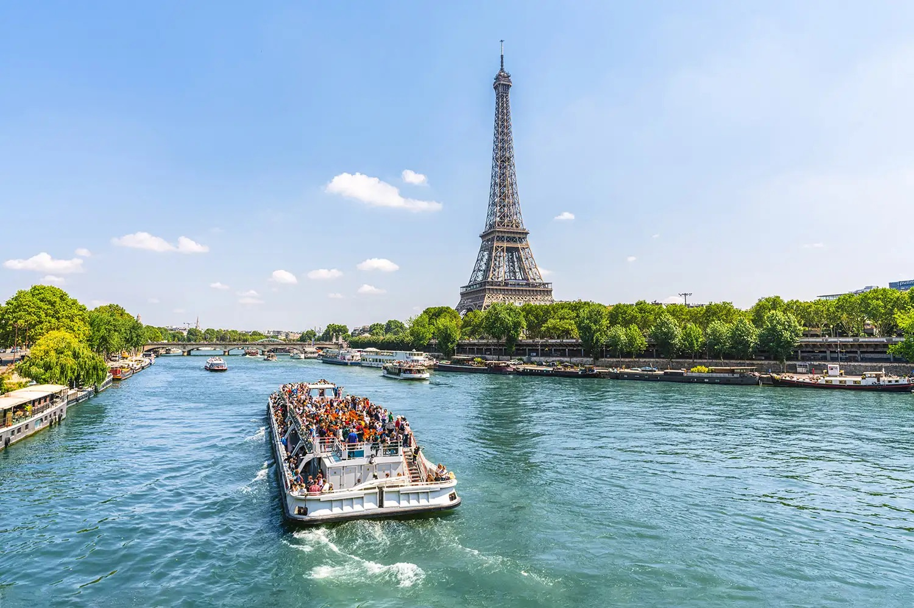
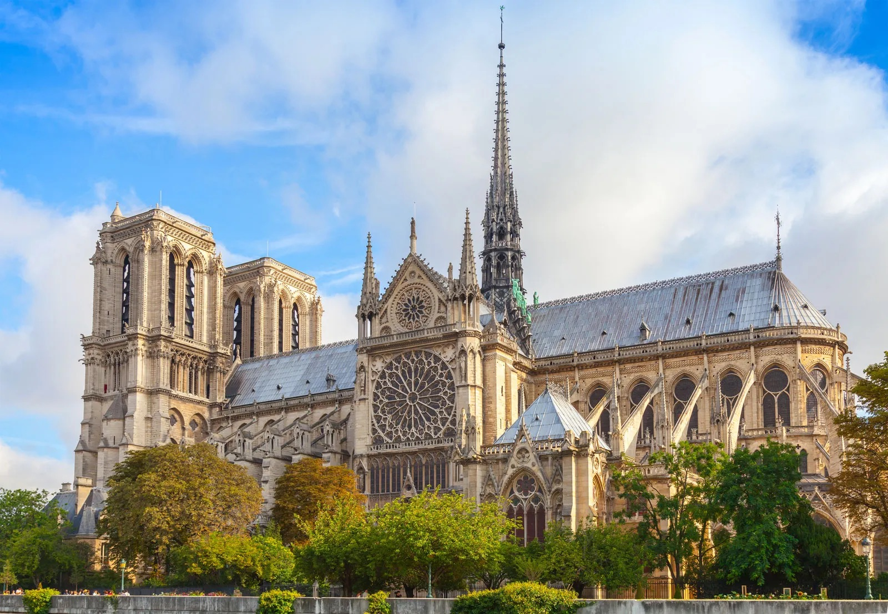
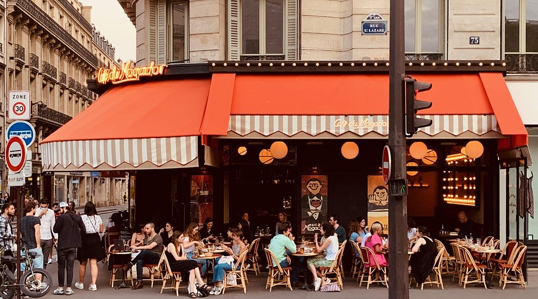

The Vibe
Paris is one of those cities that feels best when you stop trying to conquer it. The magic isn't in checking off every landmark — it's in slow mornings, café stops, and wandering until you find a street you never want to leave.
Compared to London, Paris feels quieter and more intentional. It's less about doing a lot and more about enjoying where you are. That said… Paris will humble you if you don't plan at all. The biggest attractions book up fast, and not reserving ahead can mean missing out.

Best For
- Slower, more relaxed trips
- Food + café culture enthusiasts
- Shopping + aesthetics lovers
- Wandering with no strict plan
What to Do
The best approach to Paris is picking a few things you actually care about, not trying to do everything.
Must-See (Pick a Few, Not All)
Arc de Triomphe — Views of Paris from the top. Eiffel Tower — Book online to skip lines. Notre Dame — Rebuilt and reopening (check status before going).
Neighborhoods to Wander
Montmartre — Best views + vibe, feels separate from the rest of Paris. Le Marais — Shopping + cafés, actual locals around. Saint-Germain — Classic Paris feel, boutiques, literary history.
Experiences Worth It
Versailles day trip — Step into a completely different world. The palace is cool, but the gardens are what make it worth it (especially spring). Walking along the Seine at sunset — Free, iconic, actually magical.

☕ Café Culture (This Is The Experience)
Honestly, this is the whole point of Paris. Sitting outside, ordering something small, and just people-watching is one of the best parts of the trip. The vibe, the pastries, the way time just stops — it's very intentional.
Pick a café, grab a coffee or wine, get a croissant or something sweet, and just sit. Don't rush it. Chat with the person next to you. Watch people. This is how you actually experience Paris.
🛍️ Shopping + Streets
Paris shopping is amazing but expensive. Even if you're not buying anything, just walking through areas like Le Marais or near Galeries Lafayette is worth it. The window displays alone are art.
Le Marais
Independent boutiques, vintage stores, small galleries. Wander around and find weird, beautiful stuff. This is where Parisians actually shop.
Galeries Lafayette + Printemps
Massive department stores. Expensive, but the rooftop views are free and stunning.
Rue de Rivoli
Tourist heavy, but also good for people-watching and grabbing basics.


🏰 Versailles Day Trip
Going to Versailles feels like stepping into a completely different world. It's a bit touristy and can feel crowded, but there's something genuinely awe-inspiring about it.
Tips: Book tickets online ahead of time. Go early morning to beat crowds. The palace is cool, but the gardens are what really make it worth it — especially in spring when everything's blooming. You can rent bikes to explore the grounds faster.
Where to Eat & Drink
Classic Paris Meals
- Chez Georges - Steak frites, very Parisian
- Le Deauville - French classics
- Bouchons - Traditional Lyonnais restaurants
Café Moments
- Any corner café (honestly better than planning)
- Croissants > full breakfasts (this is the way)
- Wine from a shop (€3–8, excellent quality)
Sweet Treats & Pastries
- Ladurée or Pierre Hermé - Macarons (fancy but worth it)
- Boulangeries everywhere - Fresh croissants, pain au chocolat (€1–3)
- Ice cream - Berthillon on Île Saint-Louis (legendary)

Where to Stay
Best Neighborhoods
Le Marais: Best mix of everything—shopping, cafés, history, good restaurants.
Saint-Germain: Classic, aesthetic Paris. Literary history. More upscale vibes.
Montmartre: Village-like feel, but touristy around Sacré-Cœur. Better further out.
Tip: Stay slightly outside the main tourist areas for better food, vibe, and prices.
Budget Options
- Hostels: €20–30/night (St Christopher's is popular)
- Airbnb: €40–70/night for a room or small studio
- Budget hotels: €50–80 in quieter neighborhoods
Real Tips
- BOOK things early. Louvre, Dior, Versailles, popular restaurants — book online or risk missing out.
- Expect to walk A LOT. Paris is huge. Comfortable shoes are non-negotiable.
- Tourist spots are expensive but still fun. Don't be afraid to do them, just be strategic and book ahead.
- Metro is easy and efficient. Get a day pass (€8–15) or carnets (10-ticket pack). Ubers get pricey.
- Go in spring. Weather changes everything. March–May is perfect. Summer is hot and crowded.
- Staff can be a little rude. It's not personal. Say "Bonjour," use "s'il vous plaît," and most people soften up immediately.
- Learn basic French phrases. Even broken French gets you way better service than English.
- Cafés will let you sit for hours. This is normal. Nobody's rushing you. That's the whole point.
Sample Weekend Plan
This is just a starting point. The best Paris weekends are the ones where you wander and discover things randomly.
Friday Evening
Arrive, settle into neighborhood. Dinner at a café or small bistro, walk along the Seine at dusk, early night to adjust.
Saturday
Morning: Slow café breakfast (croissants, coffee, people-watching). Midday: Either Versailles day trip OR explore a neighborhood thoroughly (Montmartre, Le Marais). Evening: Shopping or museum, nice dinner.
Sunday
Morning: Another slow café moment (this is important). Midday: Wander a different neighborhood or revisit your favorite from Saturday. Afternoon: Parks or museums depending on energy. Evening: Casual dinner, rest up.
Pro tip: Don't over-schedule. The best Paris moments happen when you're just sitting somewhere beautiful with no rush.